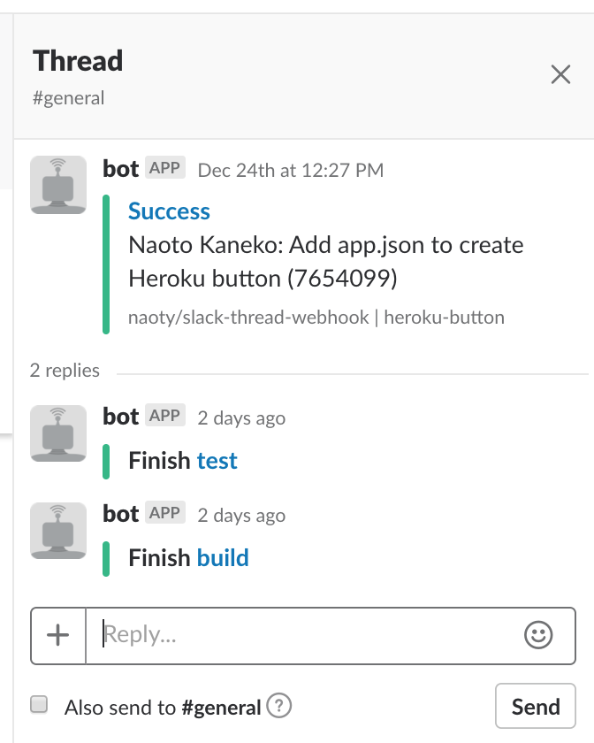

スレッド化できるSlack webhookを作った

Slackへの通知をスレッド化するため、naoty/slack-thread-webhookという簡単なプロキシをGoで作った。
作った理由
CIからの通知をSlackに送るようにしていると、CIからの通知でchannelが埋まってしまうようなことがよくあると思う。しかも、複雑な処理をCI上で行うと、細かく分解されたジョブから大量の通知が来るようになる。そこで、こういった簡単なプロキシを作って同じworkflowの通知をスレッドにまとめようと考えた。
これは何か
slack-thread-webhookはPOST /hooks/というエンドポイントを持っており、Slackのincoming webhookと同じリクエストボディを受け付ける。このエンドポイントにリクエストを送ると、初回はメッセージとしてSlackに転送し、同じ``に二回以上送ると初回に送られたメッセージのスレッドに転送する。
内部的には、Slackにスレッドとしてメッセージを送るために必要な親メッセージのtimestampを``とともにRedisに保持するようにしている。
どう使うのか
上のスクショのようなCIの通知では、例えばCircle CIのCIRCLE_WORKFLOW_IDのような一連のジョブで共通するIDを使って、以下のようにリクエストを送ることでスレッドに通知をまとめることができる。
cat << EOS | curl -X POST -H "Content-Type: application/json" -d @- https://slack-thread-webhook.herokuapp.com/hooks/${CIRCLE_WORKFLOW_ID}
{
"attachments": [
{
"title": "Start",
"text": "$(git log -1 --pretty='%an: %s')",
"footer": "naoty/slack-thread-webhook | ${CIRCLE_BRANCH}"
}
]
}
EOS
cat << EOS | curl -X POST -H "Content-Type: application/json" -d @- https://slack-thread-webhook.herokuapp.com/hooks/${CIRCLE_WORKFLOW_ID}
{
"attachments": [
{
"color": "good",
"title": "Finish "
}
]
}
EOS
どうやって始めるのか
Herokuで簡単に動かせるようにHeroku buttonを作った（ブログのCSSででかくなっちゃったけど面倒だからこのまま）。

また、Docker HubにDockerイメージを公開しているので、ECS等で動かす場合にはこちらを使うとセットアップしやすいと思う。